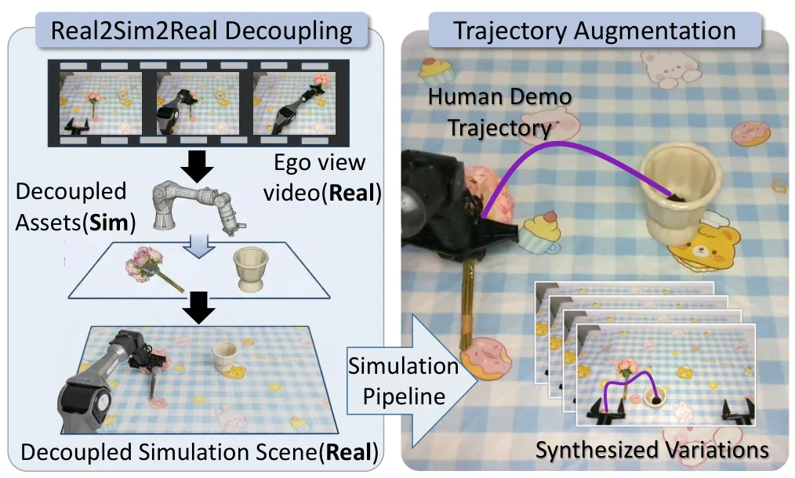
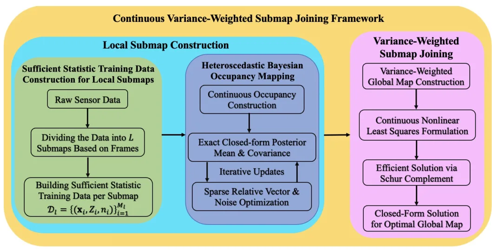
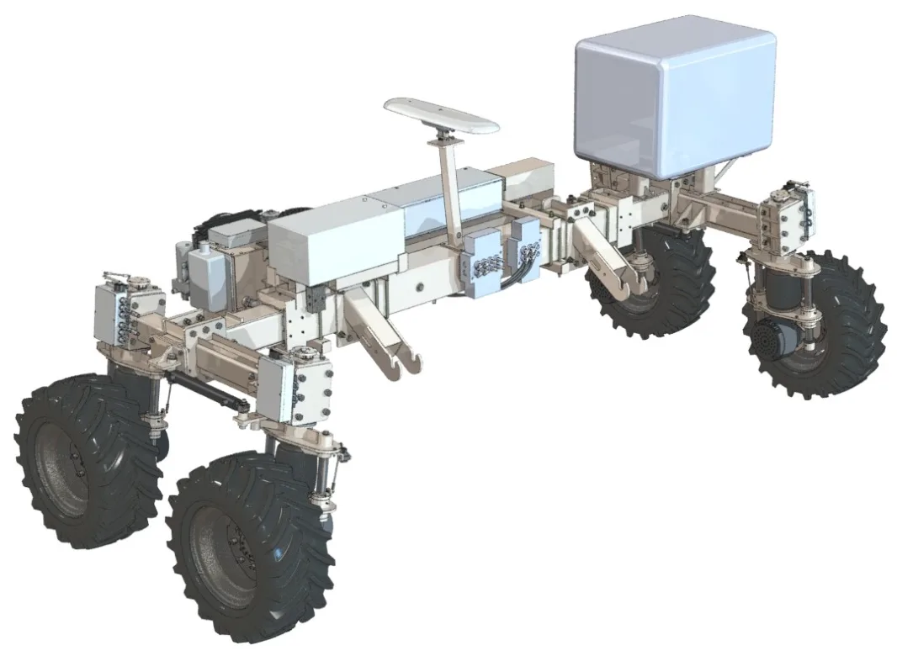
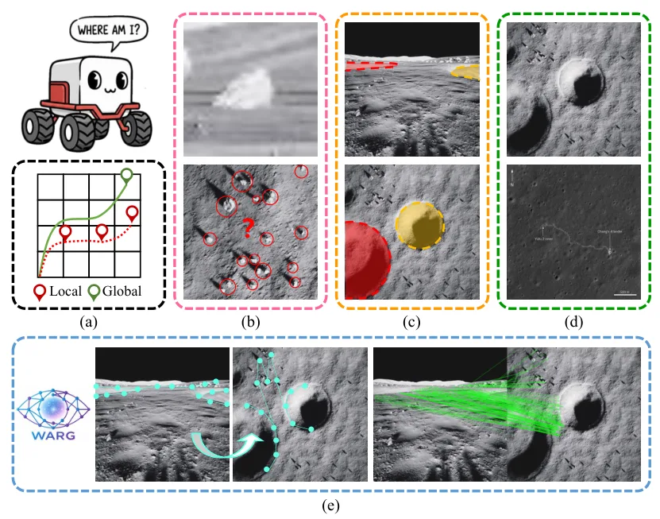
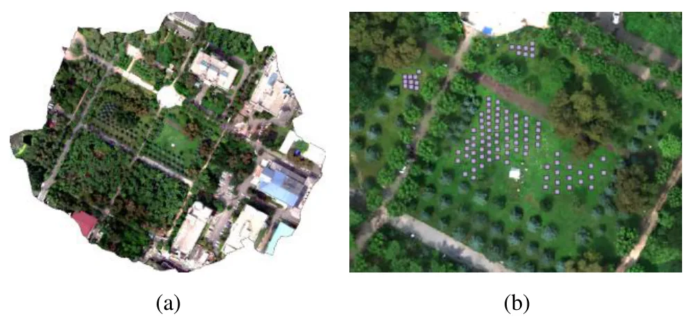
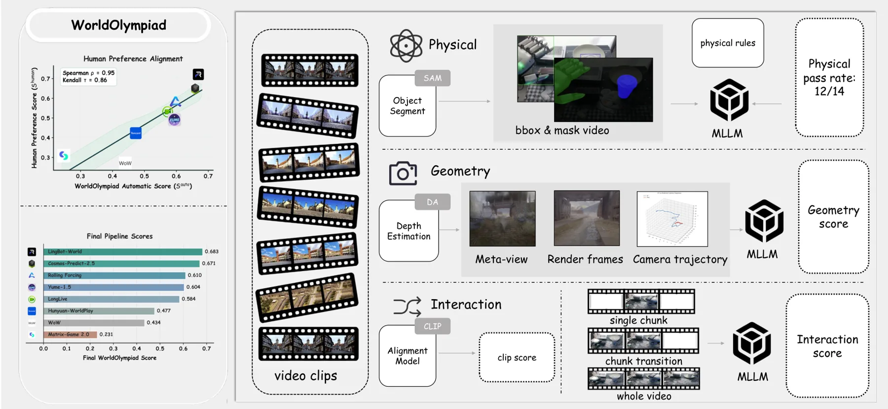

新论文 · 日期 2026-06-09 · score 14 · cs.CV, cs.AI, cs.RO
作者：Ray Zhang, Marcus Greiff, Thomas Lew, John Subosits
评分 9.4/10
点云配准LiDAR/RGB-D 里程计无对应点优化RKHS黎曼二阶优化
一句话工作总结：Generalized-CVO 用各向异性 RKHS 表示和二阶黎曼优化做无对应点点云配准，直接服务 LiDAR/RGB-D 里程计前端。
本文提出一种快速、无需显式对应关系的局部点云配准方法，结合几何表面结构与再生核希尔伯特空间（RKHS）嵌入。方法把点云表示为连续函数，并为每个点使用编码局部几何的各向异性核，从而在表面法向上强化对齐，在切向上放宽约束。为求解配准问题，作者提出带近似黎曼 Hessian 的二阶流形优化，相比以往 correspondence-free RKHS 方法中的一阶 solver 最高可加速 10 倍。实验覆盖室内外 LiD…
We propose a fast and correspondence-free local point cloud registration method that leverages geometric surface structure and reproducing kernel Hilbert space (RKHS) embeddings. The method represents point cl…

新论文 · 日期 2026-06-09 · score 10 · cs.CV
作者：Qi Song, Yifei He, Chi Zhang, Zheng Fu
评分 7.5/10
4DGS自动驾驶未来视图合成动态场景World Model
一句话工作总结：Envision4D 用前馈 4DGS 和未来相机位姿预测做自动驾驶动态场景未来视图外推。
动态场景未来演化预测对自动驾驶非常关键，但现有前馈范式主要面向插值；当扩展到未来外推时，面对大位移会出现 ghosting，并常受限于简化运动假设或严格未来先验。Envision4D 是一个完全自监督、前馈式、pose-free 的未来外推框架。它通过 Future Pose Prediction 模块以迭代去噪方式推断未来相机参数；通过 In-layer Temporal Attention 与 Conditio…
Forecasting the future evolution of dynamic scenes is crucial in autonomous driving. However, existing feed-forward paradigms are primarily designed for interpolation. When extended to future extrapolation, th…

新论文 · 日期 2026-06-09 · score 10 · cs.CV
作者：Haoliang Han, Ziyuan Luo, Renjie Wan
评分 5.9/10
3DGS模型溯源LLM 推理数字资产治理取证分析
一句话工作总结：GaussTrace 用 3DGS 参数统计、编辑模拟和 LLM 证据推理追踪 Gaussian 模型的演化来源。
3D Gaussian Splatting 已成为高质量 3D asset 生成技术，但 3DGS 模型在数字平台上被共享、编辑和迭代后，会带来知识产权保护和取证追踪挑战。GaussTrace 提出一个用于构建 3DGS 模型有向 provenance graph 的框架，把溯源分析表述为基于证据的推理问题。方法先对 3DGS 参数做属性级统计画像，捕捉模型内在属性；再通过假设驱动的编辑模拟生成常见操作下的辅助证据…
3D Gaussian Splatting (3DGS) is a powerful technique for creating high-fidelity 3D assets. However, the widespread sharing and iterative modification of 3DGS models across digital platforms create pressing cha…

新论文 · 日期 2026-06-09 · score 10 · cs.CV
作者：Yuhao Wang, Puyi Wang, Linjie Li, Zhengyuan Yang
评分 6.8/10
三维重建VLMBlender 代码可编辑表示数字孪生
一句话工作总结：3D-CoS 把三维重建转成 VLM 生成 Blender 代码的问题，强调程序化可控与局部编辑。
近期三维重建和编辑系统多使用 NeRF、点云、网格等隐式或显式低层表示，这些表示能高保真渲染，却很难进行程序化控制。3D-CoS 提出把三维资产构造为可执行 Blender 代码的 3D Code Synthesis 范式，并系统评估当前开源和闭源 VLM 在代码式三维重建中的能力。作者还引入多种结构化代码合成流程，包括 blueprint-based planning、基于 Blender API 文档的 RAG…
Most recent 3D reconstruction and editing systems operate on implicit and explicit representations such as NeRF, point clouds, or meshes. While these representations enable high-fidelity rendering, they are fu…

新论文 · 日期 2026-06-09 · score 9 · cs.CV
作者：Wenhao Hu, Haonan Zhou, Liu Liu, Yun Du
评分 7.4/10
动态 3DGS机器人操作单目视频重建场景图数字孪生
一句话工作总结：ManiSplat 将机器人、物体和背景解耦为 Gaussian 子场，用单目操作视频重建可控动态数字孪生。
从真实观测重建动态交互三维场景是计算机视觉和机器人中的基础挑战。静态 3DGS 已能实现高质量重建，但扩展到含机械臂和可操作物体的交互环境时，会受到复杂接触和突发位姿变化影响。ManiSplat 从单目 ego-view 机器人视频中重建可控、解耦的 Gaussian digital twins。方法提出 Graph-Structured Disentangled Representation，把机器人、物体和背景…
Reconstructing dynamic and interactive 3D scenes from real-world observations remains a fundamental challenge in computer vision and robotics. While recent advances in 3D Gaussian Splatting have enabled high-f…

新论文 · 日期 2026-06-09 · score 7 · cs.RO
作者：Zhuhua Bai, Yingyu Wang, Liang Zhao, Shoudong Huang
评分 8.7/10
占据建图子图拼接大尺度 SLAM不确定性连续地图表示
一句话工作总结：该工作把 occupancy 子图拼接从离散栅格推进到带方差估计的连续 log-odds 场，面向大尺度 SLAM 全局一致性。
大尺度 SLAM 面临轨迹漂移累积和维护全局一致性的计算成本增长。子图拼接通过先构建局部一致子图、再融合为全局地图来缓解这些问题，但现有 occupancy-based 方法通常在离散栅格上操作，优化梯度不平滑且忽略占据估计不确定性。本文提出首个连续概率子图拼接框架，在 latent log-odds 空间中联合优化子图位姿和全局 occupancy field。框架使用信息保持的 sparse Bayesian…
Large-scale SLAM remains challenging due to accumulated trajectory drift and the increasing computational cost of maintaining global consistency. Submap joining alleviates these issues by constructing locally…

新论文 · 日期 2026-06-09 · score 5 · cs.RO, eess.SY
作者：Batu Candan, Mohammed Atallah, Simone Servadio, Saeed Arabi
评分 7.8/10
GNSS outage惯性导航鲁棒 EKF农业机器人扰动拒止
一句话工作总结：该方法用 jerk 增广 EKF 和多调谐因子自适应协方差，在 GNSS/LiDAR/视觉失效和强振动下增强农机导航鲁棒性。
自主农业机器人在越野环境中常因 GNSS、LiDAR 或视觉传感器失效以及高频振动而导致精确状态估计受损。本文提出一种基于 jerk-augmented EKF 并结合 Multiple Tuning Factor 自适应方法的鲁棒导航算法。不同于假设测量噪声恒定的标准 EKF，该方法实时动态调整测量协方差矩阵，使系统能够应对突发扰动和传感器离群。作者在 Salin247 自主机器人真实数据上评估，结果表明 jer…
Precise state estimation for navigation of autonomous agricultural robots is often compromised by sensor outages (GNSS/LiDAR/Visual) and high-frequency vibrations inherent in off-road environments. This paper…

新论文 · 日期 2026-06-09 · score 5 · cs.CV
作者：Mao Chen, Xu Yang, Chuankai Liu, Xiangkai Zhang
评分 8.3/10
无 GNSS 定位跨视角定位图匹配月球车遥感辅助重定位
一句话工作总结：WARG 用 rover 图像与卫星/轨道图像的重投影图匹配，在无 GNSS 月面场景中实现米级全局定位。
精确 rover 定位是自主月球探索的前提，但月面没有 GNSS，局部定位方法又会累计漂移。跨视角定位通过匹配 rover-view 与 satellite-view 图像提供一种无漂移全局方案，但月面存在实体纠缠、跨视角差异和仿真到真实域偏移。本文提出 WARG（Warped Alignment of Reprojected Graphs），使用统一图学习和重投影图匹配来实现稳健跨视角对齐。在合成 LuSNAR…
Precise rover localization is a prerequisite for autonomous lunar exploration, yet the absence of Global Navigation Satellite System (GNSS) signals and the cumulative drift of local localization methods severe…

新论文 · 日期 2026-06-09 · score 4 · cs.CV
作者：Zhenqiang Qin, Chenguang Dai, Min Wang, Xian Li
评分 6.2/10
UAVSFM多光谱影像BRDF航测重建
一句话工作总结：该研究用 SFM 几何回投提取 UAV 多光谱多角度观测，量化视角对反射率一致性的影响。
低空 UAV 多光谱影像由于飞行高度低和视场宽，天然包含多角度观测，这可能引入由几何驱动的辐射变化。本文提出一个几何感知的多角度观测提取流程，从 BRDF 角度量化观察几何效应。方法首先通过结构光束法（SFM）精化相机内外参，然后把正射图上的同质区域回投到不同视角的多个原始子图，从而为同一地物目标联合提取多波段 reflectance 和观测几何参数。随后在 VZA/RAA 域中进行极坐标可视化分析。草地目标结果显…
UAV multispectral imagery naturally contains multi-angular observations due to low flight altitude and wide field-of-view imaging, which may introduce geometry-driven radiometric variability. This study propos…

新论文 · 日期 2026-06-10 · score 3 · cs.CV
作者：Yuke Zhao, Wangbo Zhao, Weijie Wang, Zeyu Zhang
评分 6.5/10
World Model3D 一致性评测Gaussian Splatting机器人仿真Benchmark
一句话工作总结：WorldOlympiad 用物理、几何和交互三条赛道评测世界模型，其中几何赛道通过 Gaussian splatting 检查 3D 一致性。
WorldOlympiad 是一个用于诊断视频世界模型的 benchmark，覆盖物理真实性、几何一致性和交互保真度。现有 benchmark 多关注视觉质量、语义对齐或短期时序一致性，难以判断生成视频是否遵守物理规则、保持连贯 3D 结构并支撑长时可控交互。WorldOlympiad 将评测拆为三个互补维度：physical track 使用对象分割和 MLLM-as-judge 评估力学、热现象和材料属性；ge…
We introduce WorldOlympiad, a benchmark for diagnosing video-based world models across physical faithfulness, geometric consistency, and interaction fidelity. While existing benchmarks often focus on visual qu…